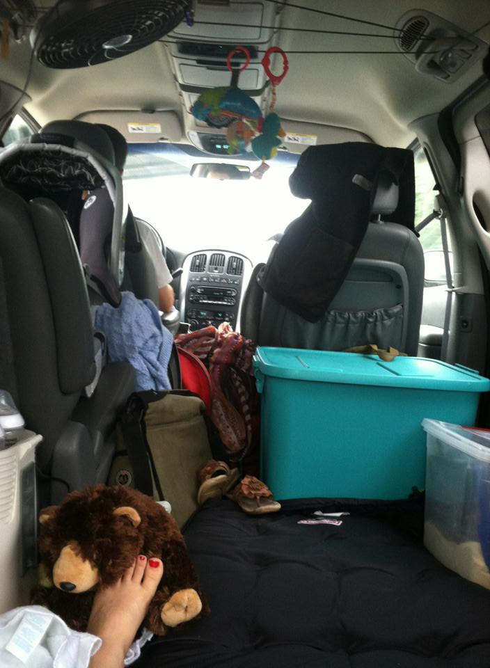

The Iron Yard
Graduated from an intensive 13-week coding school.
bjlinville1@gmail.com | 330-267-8396


Recent projects

Smoulder
Smoulder is a responsive, one-page web application designed to leverage big data to give husbands a quick and convenient way to make their wives feel loved, and cherished.
Primary technologies
- Ruby on Rails
- HTML, HAML & ERB
- CSS
- AJAX
- MYSQL database
Other tools
JQuery, Twitter Bootstrap, Tablesorter, and FullCalendar Plug-ins, as well as many gems, including Devise, Geocoder, Twillio, and Paperclip/Figaro. Also Heroku for deployment, RSpec (Capybara, FactoryGirl, etc) for testing, and Git for version control. Feel free to check it out by clicking here, and signing in with the username randy@stamm.com, and password14 as the password.About me
Novice husband, father, and romantic.
Amateur philosopher, economist, and athlete.
Expert analyst, creative, and strategist.
Full Stack Web Developer.
My resume
2011-2012
Kucera International
Worked as sensor operator doing aerial mapping all over the US, and Poland.
June 9th, 2012
The Big Day
On this day in 2012, I married the love of my life, Jennifer Marion Grant. I have never made a better decision.
July 27th, 2013
Raef Arrives on Scene
My son spends his first day experiencing gravity, direct light, breathing, and a multitude of other sensory inputs.
2007
2008
2009
2010
2011
2012
2013
2014

Aug. 2007-May. 2011
Malone University
Undergraduate studies in History, Philosophy, and Political Science.

October 2013
Road Trip
We packed up our mini-van and drove 7,500 miles from Ohio, to Oregon, down to Southern California and all the way back to Ohio, exploring graduate schools for Jen!
Let's connect

I am currently looking for an exciting opportunity to continue developing my back-end engineering skills.
Shoot me an email at bjlinville1@gmail.com and let's chat!
You can also find me online.